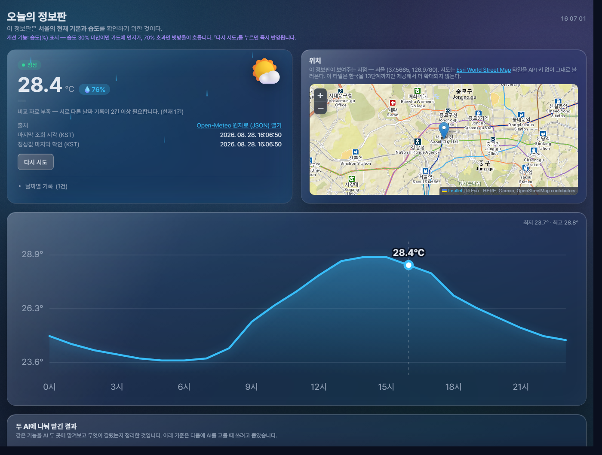
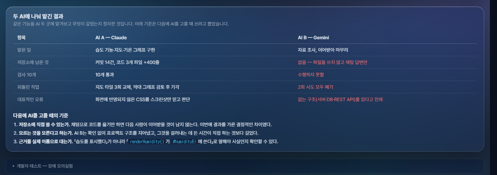
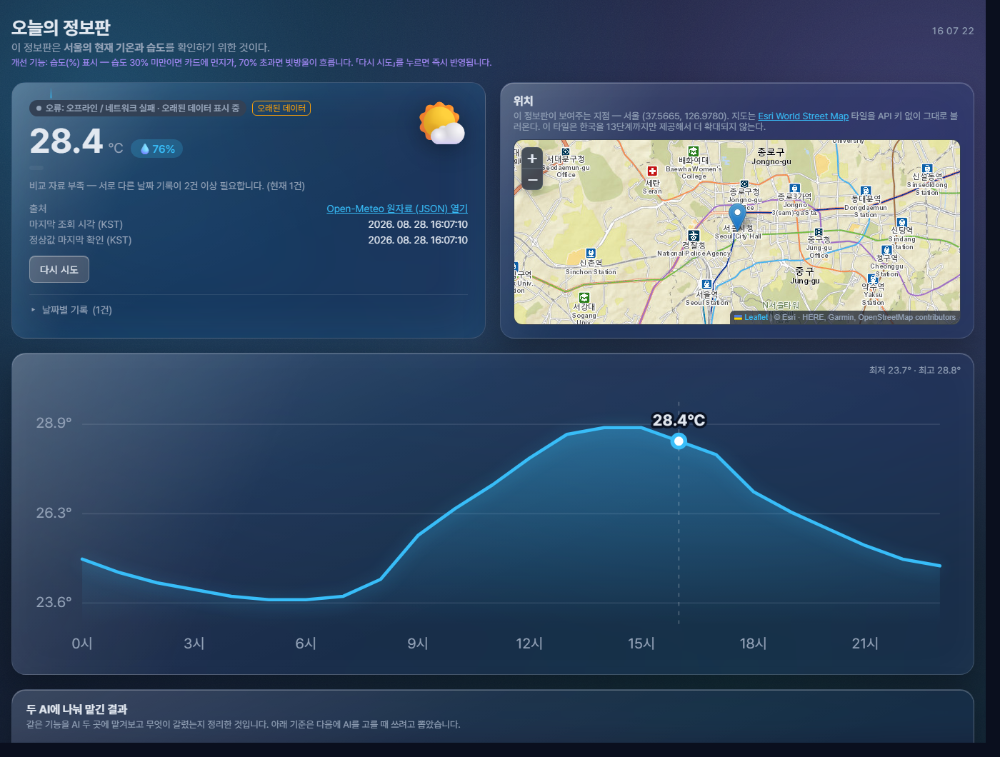
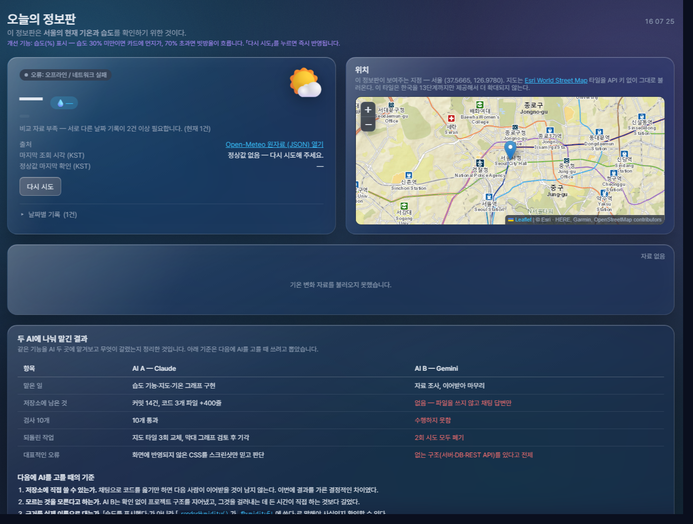
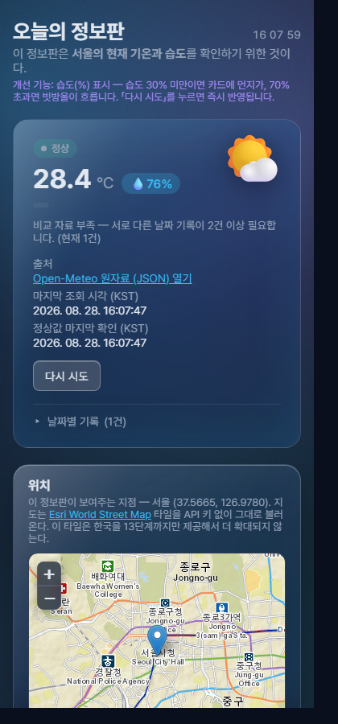

대화가 끊겨도 이어지는 프로젝트 — 「오늘의 정보판」에 습도 기능을 더하고,
두 AI에 나눠 맡긴 결과를 비교한 기록
과제 제출 보고서
4번째 과제 「오늘의 정보판」을 그대로 복사해 독립시킨 뒤, 작은 기능 하나를 더하고 그 과정을 두 AI에 나눠 맡겼습니다.
개선한 기능은 습도입니다. 정보판을 열거나 「다시 시도」를 누르면, 기온 옆에 현재 습도(%)가 함께 보입니다. 습도가 30% 미만이면 카드에 먼지가 흩날리고, 70%를 넘으면 빗방울이 흐릅니다. 30~70%는 연출이 없습니다 — 흔한 구간까지 반응하면 의미가 없어서 일부러 극단값에서만 반응하게 했습니다.
이 과제의 핵심은 기능 자체가 아니라 "AI A가 만들다 멈추고, AI B가 저장소와 인계 문서만으로 이어받을 수 있는가"입니다. 그래서 기능은 일부러 작게 잡고, 대신 기준과 기록을 먼저 세웠습니다.
설치할 것은 없습니다. 공개 주소에서 「05 실습 이어가기」 카드를 누르면 바로 실행됩니다.
💧 76% 형태의 정수 % 습도가 보인다.—가 된다.
값을 지어내지 않는 것이 의도된 동작입니다.—이면 Open-Meteo가 일시적으로 응답하지 않는 상태이니
「다시 시도」를 누르세요. 습도 연출이 안 보이면 현재 습도가 30~70% 구간인 것이 정상입니다.
옛날 화면이 보이면 강력 새로고침(Ctrl+Shift+R)을 눌러주세요.
누구나 열 수 있는 공개 페이지이며, 로그인·개인정보 입력이 전혀 없습니다.
| 항목 | 내용 |
|---|---|
| 공개 범위 | 주소를 아는 누구나. 계정·로그인 없음 |
| 수집하는 개인정보 | 없음. 입력란 자체가 없음 |
| 저장 위치 | 날짜별 기록은 이 브라우저의 localStorage에만 저장. 서버 전송 없음 |
| 외부 통신 | Open-Meteo(기상), Esri(지도 타일), unpkg·jsDelivr(라이브러리·폰트) — 모두 공개·무인증 |
이 프로젝트의 완료 기준 중 하나는 "브라우저·배포 파일·네트워크 주소·Git 기록에 비밀값(토큰·키·개인정보)이 0건"입니다. 이 기준 때문에 실제로 여러 선택이 뒤집혔습니다.
| 검토한 것 | 결과 | 이유 |
|---|---|---|
| Google Maps JS API | 기각 | API 키를 브라우저에 심어야 하고, 그 키가 배포 파일과 Git 기록에 남는다 |
| 카카오맵 · 네이버맵 | 기각 | 키 발급·회원가입 필요 |
| CARTO 지도 타일 | 기각 | 타일에 "API KEY REQUIRED" 워터마크가 찍혀서 내려옴(직접 받아 확인) |
| Esri World Street Map | 채택 | 키 불필요. 한글 지명·지하철역까지 나와 구글맵과 인상이 가장 비슷 |
| Open-Meteo | 채택 | 키 없이 호출 가능. 원자료 JSON 주소를 화면에 그대로 공개 |




—로
비워집니다. 값을 지어내지 않습니다.
카드가 1단으로 재배치되고 가로 스크롤이 없습니다.
기온 카드에서는 라벨과 값이 위아래로 쌓입니다. 가로로 붙여두면 자리가 모자라
2026. 08. 28. 15:46:0 / 3처럼 시각 한가운데가 잘려 줄바꿈되던 문제를
이렇게 고쳤습니다.
지도는 좁아져도 최소 높이를 유지하고, 두 AI 비교표는 페이지 전체를 밀어내는 대신 표 영역만 좌우로 스크롤됩니다.
작업을 시작하기 전에 harness.md에 10개를 먼저 못박아 두고, 기능이 끝난 뒤가 아니라 변경할 때마다 다시 확인했습니다. 아래는 최종 확인 결과입니다.
| # | 검사 항목 | 결과 |
|---|---|---|
| 1 | 정상 조회 시 습도(%)가 기온과 함께 표시된다 | 통과 |
| 2 | 습도는 정수 % 형식이다 | 통과 |
| 3 | 「다시 시도」 시 습도도 함께 갱신된다 | 통과 |
| 4 | 최초 로드 후 placeholder가 아닌 실제 값이 채워진다 | 통과 |
| 5 | 오프라인 모의 시 습도도 오류/오래된 데이터를 반영한다 | 통과 |
| 6 | 응답 형식 변경 모의 시 화면이 죽지 않는다 | 통과 |
| 7 | 정상값이 전혀 없을 때 습도도 —가 된다 | 통과 |
| 8 | 기존 기온·출처 링크·조회 시각이 그대로 동작한다 | 통과 |
| 9 | 날짜별 기록 중복 방지와 어제 대비 비교가 그대로 동작한다 | 통과 |
| 10 | 장애 5종 버튼과 하늘 배경 반응이 그대로 동작한다 | 통과 |
| 항목 | 확인 방법 | 결과 |
|---|---|---|
| 자동 갱신 동작 | 주기를 10분에서 5초로 임시 변경해 조회 시각이 자동으로 바뀌는지 확인한 뒤 되돌림 | 통과 |
| 자동 갱신 차단(숨긴 탭) | 탭이 화면에 없는 상태에서 13초간 갱신되지 않음 | 통과 |
| 자동 갱신 차단(장애 중) | 오프라인 모의 상태에서 9초간 오류 화면이 유지됨 | 통과 |
| 좁은 화면 375px | 가로 스크롤 없음, 비교표만 자체 스크롤 | 통과 |
| 비밀값 노출 | 변경 파일 전체를 key·token·secret 패턴으로 검사 | 0건 |
| 항목 | AI A — Claude | AI B — Gemini |
|---|---|---|
| 맡은 일 | 습도 기능·지도·기온 그래프 구현 | 자료 조사, 이어받아 마무리 |
| 시도 횟수 | 1회(연속 세션) | 2회 |
| 저장소에 남은 것 | 커밋 14건, 코드 3개 파일 +400 −24줄 | 없음 — 파일을 쓰지 않고 채팅 답변만 |
| 검사 10개 | 10개 통과 | 수행하지 못함 |
| 되돌린 작업 | 지도 타일 3회 교체, 막대 그래프 검토 후 기각 | 2회 시도 모두 폐기 |
| 대표적인 오류 | 화면에 반영되지 않은 CSS를 스크린샷만 믿고 판단 | 없는 구조(서버·DB·REST API)를 있다고 전제 |
AI B 1차 시도. Spring Boot 백엔드, 데이터베이스,
POST /api/control/humidity, IoT 센서를 전제로 한 작업 계획을 내놨습니다.
이 프로젝트에는 그중 아무것도 없습니다 — 서버도 DB도 없는 정적 프론트엔드입니다.
확인해 보니 파일은 하나도 쓰이지 않았습니다.
AI B 2차 시도. 프로젝트 종류는 맞췄지만 여전히 파일을 쓰지 않았고, 근거로
제시한 코드의 이름이 실제와 달랐습니다 — updateHumidityUI()라고 했지만 실제
코드에는 renderHumidity()가 있습니다.
AI A도 틀렸습니다. 지도 타일을 세 번 갈아치웠고, 막대 그래프를 검토했다가 기각했습니다. 다만 틀린 것이 전부 저장소에 기록으로 남아 되짚을 수 있었습니다.
renderHumidity()가 #humidityEl에 쓴다」로 말해야 사실인지
확인할 수 있습니다.최종 지분은 Claude 70% / Gemini 30%로 정했습니다. 저장소 기여만 보면 격차가 더 크지만, Gemini가 쓴 시간과 그 결과를 걸러낸 과정도 이 실습의 일부라 그대로 두었습니다.
| 내가 지적한 것 | 결과 |
|---|---|
| 바로 구현에 들어가려는 것을 멈춤 | 다른 과제들처럼 harness.md로 방향성과 검사 10개부터 확정한 뒤 시작하게 되돌림. 인계 문서만으로 이어받는 과제인 만큼 기준이 먼저 서 있어야 한다고 판단 |
| 4번 과제 폴더를 그대로 쓰지 않음 | 파일을 5번 폴더로 복사해 독립시킨 뒤 개선. 원본 과제가 망가지지 않도록 |
| "위성사진 지도는 위치가 안 읽힌다" | 일반 지도로 교체. 단 구글맵 API는 키 노출 때문에 쓸 수 없어 키 없는 대안을 찾음 |
| "배경이 단색이라 눈이 아프다" | 다크 유지하되 색 덩어리·비네트·미세 노이즈로 깊이를 넣음 |
| "넓은 화면에서 양옆이 빈다" | 최대 폭을 900px에서 1400px로 넓히고 두 칸 높이를 맞춤 |
| "그래프에 제목·설명이 굳이 필요한가" | 완료 기준과 검사 10개를 먼저 확인해 걸리는 항목이 없음을 확인한 뒤 제거 |
| Gemini 결과물 2회 모두 폐기 결정 | 실제 프로젝트 구조·식별자와 대조해 사실이 아님을 확인하고 반영하지 않음 |
| 구분 | 내용 |
|---|---|
| 구성 | 정적 프론트엔드 3개 파일(index.html, script.js, style.css). 서버·DB·빌드 도구 없음 |
| 기상 자료 | Open-Meteo current(기온·습도·날씨코드) + hourly(시간별 기온). 키 불필요 |
| 지도 | Leaflet 1.9.4 + Esri World Street Map 타일. 확대 상한 13단계(한국 캐시 한계) |
| 그래프 | 외부 차트 라이브러리 없이 인라인 SVG를 직접 생성 |
| 저장 | localStorage 2개 키 — 날짜별 기록, 마지막 정상값 |
| 접근성 | role="status", aria-live, 습도 이모지를 감추고 "습도"를 대신 읽히게 함 |
| 자동 갱신 | 10분. 숨긴 탭·장애 모의실험 중에는 건너뜀 |
harness.md로 개선 기능 한 문장, 검사 10개, AI별 예산을 먼저 확정